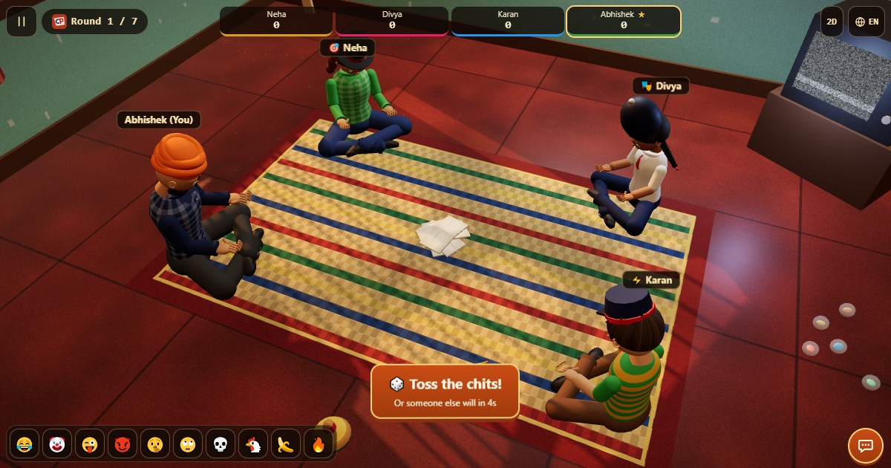

Guardie e Ladri (Raja Rani Chor Police · Cops and Robbers)
- 👥 4 giocatori
- Giochi di società
- 🆓
Guida in italiano
Quattro bigliettini, un ladro. La guardia deve scoprirlo leggendo i volti. In India: Raja Rani Chor Police.
English names: Raja Rani Chor Police · Cops and Robbers

Come si gioca
- Si piegano e si lanciano quattro bigliettini: Re (1000), Regina (800), Guardia (500) e Ladro (0).
- Ogni giocatore ne prende uno e lo legge in segreto.
- La Guardia si rivela e deve trovare il Ladro tra gli altri tre.
- La Guardia indica un sospettato, poi tutti aprono il bigliettino.
- Se indovina, la Guardia tiene i suoi 500 e il Ladro prende 0. Se sbaglia, il Ladro si prende i 500 della Guardia. Re e Regina tengono sempre i loro punti.
- Giocate quanti round volete; vince il totale più alto.
Domande frequenti
Guardie e Ladri è lo stesso gioco di Raja Rani Chor Police?
Sì. È lo stesso gioco con quattro bigliettini. In India si chiama Raja Rani Chor Police o Chor Sipahi, in Pakistan Raja Wazir Chor Sipahi, in Nepal Raja Mantri Chor Sipahi e in inglese Cops and Robbers. ChitPlay lo fa giocare con il nome della lingua che scegli.
Quanti giocatori servono?
I bigliettini sono quattro, quindi quattro giocatori. In ChitPlay il computer occupa i posti vuoti, così puoi giocare da solo o con uno, due o tre amici.
Quanti punti vale ogni bigliettino?
Re 1000, Regina 800, Guardia 500 e Ladro 0. La Guardia tiene i suoi 500 se prende il Ladro; se sbaglia, i 500 vanno al Ladro.
Cosa sono le regole della casa?
Varianti di altri paesi da attivare: un innocente viene svelato prima dell'accusa (Giappone), un secondo tentativo per metà punti (USA), 200 punti di penalità per un errore (Regno Unito) e 200 punti di multa per il ladro preso (Cina).
Posso giocare online con gli amici?
Sì. Usa Vicino per creare una stanza e condividi il codice di 6 cifre, il QR code o il link, oppure premi Gioca online per sederti con giocatori di tutto il mondo.
Modi di giocare
- Come ospite: Niente registrazione né accesso. Scegli un nome e gioca subito.
- Contro il computer: Se non c'è nessuno, i giocatori del computer occupano i posti liberi. Facile, normale o difficile.
- Online: Siediti a un tavolo pubblico con giocatori di tutto il mondo.
- Con gli amici vicini: Crea la partita su un telefono e condividi il codice o il QR. Gli amici entrano dal loro telefono.
- Su un solo telefono: Passatevi il telefono a turno: basta un dispositivo per tutta la famiglia.
Altre lingue
- English: Raja Rani Chor Police · Cops and Robbers
- हिन्दी: राजा रानी चोर पुलिस
- Hinglish: Raja Rani Chor Police
- Español: Policías y Ladrones
- Português: Polícia e Ladrão
- Français: Gendarmes et Voleurs
- Deutsch: Räuber und Gendarm
- Bahasa Indonesia: Polisi dan Maling
- Türkçe: Polis ve Hırsız
- 日本語: 殿様と泥棒
- 한국어: 마피아 게임 (쪽지 게임)
- 中文: 警察抓小偷
- Русский: Мафия на бумажках
- اردو: راجہ وزیر چور سپاہی
- नेपाली: राजा मन्त्री चोर सिपाही
- বাংলা: রাজা মন্ত্রী চোর পুলিশ
English: Regole complete (inglese)
Idee di giochi
- Giochi da fare a casa
- Giochi da fare con gli amici
- Giochi da fare a scuola
- Giochi in casa per tutta la famiglia
- Giochi da fare senza niente
- Giochi da festa divertenti
- Giochi per 4 persone
Tutti i giochi
 Chi è la spia?
Chi è la spia? Lupus (lupo mannaro)
Lupus (lupo mannaro) Obbligo o verità
Obbligo o verità Bigliettini indovinello
Bigliettini indovinello Voto di maggioranza
Voto di maggioranza Cadavere squisito
Cadavere squisito Flying Chit
Flying Chit Tunnel Race
Tunnel Race
In ChitPlay non ci sono soldi veri, scommesse o premi. I punti non hanno valore.